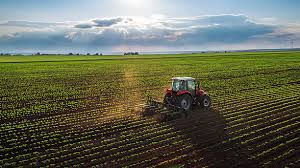

A ajuda do trator na agricultura
Os tratores desempenham um papel fundamental na agricultura moderna, ajudando a aumentar a eficiência e a produtividade na lavoura. Aqui estão algumas maneiras de como os tratores auxiliam na lavoura: 1. Preparo do Solo - Aragem: Os tratores são usados para arar o solo, quebrando e soltando a terra para facilitar o plantio. Isso ajuda a melhorar a estrutura do solo e a promover a infiltração de água. - Gradagem: Após a aragem, a gradagem é feita para nivelar o solo e preparar um leito de semeadura adequado. 2. Plantio - Semeadoras e Plantadoras: Os tratores podem ser equipados com semeadoras e plantadoras que garantem um plantio uniforme e eficiente de sementes e mudas. 3. Tratos Culturais - Corte de Plantas e Colheita: Tratores podem ser acoplados a colhedoras e cortadores para realizar a colheita de culturas como grãos, legumes e vegetais. - Pulverização: Equipados com pulverizadores, os tratores são usados para aplicar fertilizantes, herbicidas e pesticidas de forma precisa.
